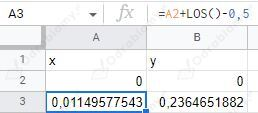
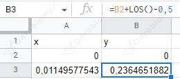
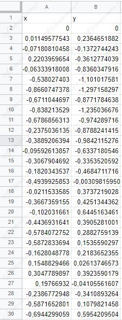
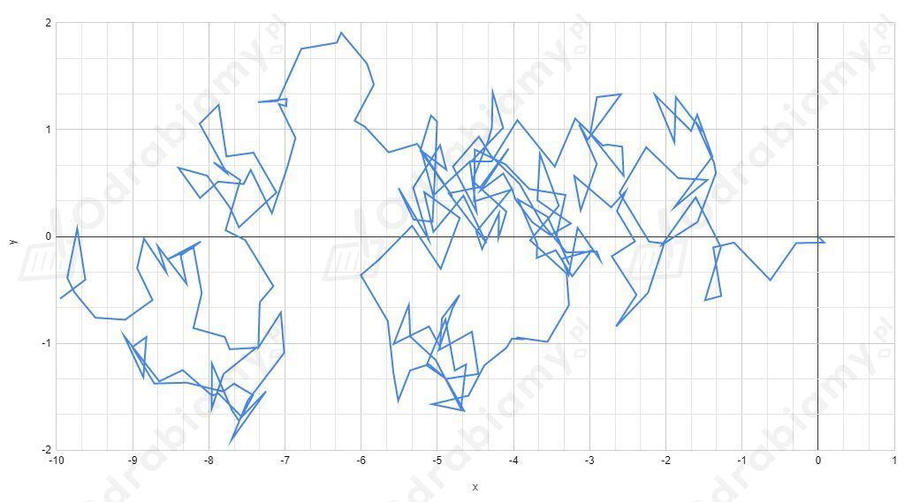
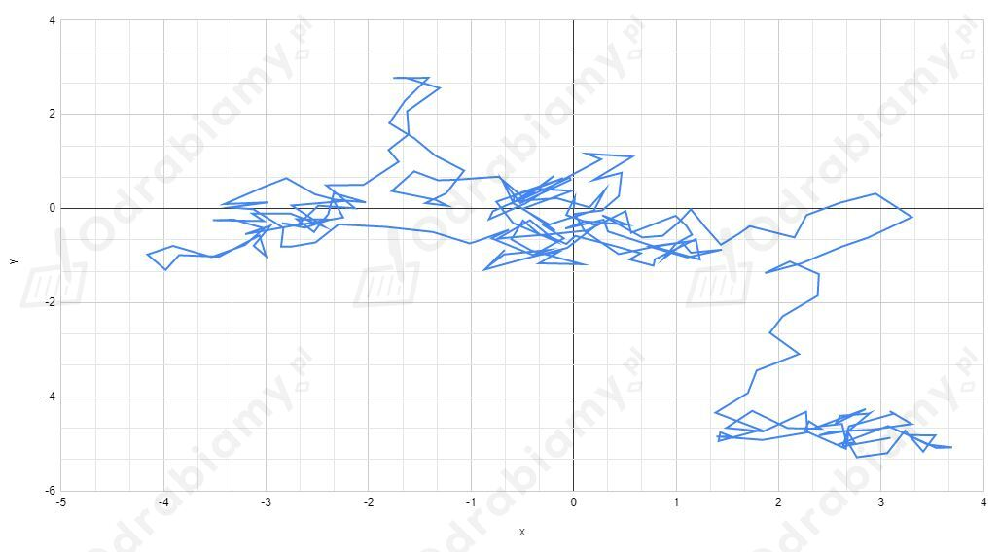

Przeprowadzimy symulację ruchów Browna z użyciem arkusza kalkulacyjnego.
Tworzymy dwie kolumny danych: współrzędna x i y położenia punktu.

Początkowe współrzędne x i y ustalamy na 0.
W kolejnym wierszu obliczamy położenie punktu w następnej chwili czasowej. Do wartości wcześniejszego położenia (wartość komórki A2) dodajemy liczbę losową.
Funkcja LOS() zwraca liczbę losową z przedziału od 0 do 1. Jeżeli odejmiemy od niej wartość 0,5 to będzie ona zwracała wartość z zakresu od -0,5 do 0,5.
Podobnie ustalamy współrzędną y położenia.

Uzupełniamy komórki do 250 przeciągając ich automatyczne generowanie. Każda kolejna komórka będzie bazowała na położeniu punktu ustalonemu w poprzedniej komórce.

Z dostępnych punktów tworzymy wykres liniowy zależności y(x).
Przykładowe wyniki symulacji ruchów Browna.

Odświeżenie arkusza kalkulacyjnego spowoduje wygenerowanie innych liczb losowych.

Punkt widocznie oddala się od początkowego położenia (0,0).